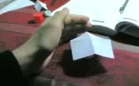

The Secret: fake yet it works
October 20, 2014Chances are you have heard of the Secret, the book or the film. It is based on an idea called the law of attraction, which asserts that focusing on positive thoughts attracts positive outcomes and vice versa.
First, I would like to admit that I had truly believed in this “law” since my high school years, until recently. From a scientific perspective, the law of attraction —and quantum mysticism in general— is considered nothing but pseudoscience. However, years ago, I genuinely believed that the law of attraction was the ultimate law of the universe. Surprisingly, it worked for me!
Surprisingly, the Secret worked for me!
I have experienced it in my life so many times. So, here I will not talk about why the secret is fake. It has already been criticized many times. More interestingly, I will talk about why I think it works even though it’s fake.
It works even though it’s fake?
In my humble opinion, the law of attraction works not because the universe grants our wishes through the quantum coupling and some electromagnetic mumbo jumbo, but because it keeps us motivated and makes us more likely to achieve our goals. When we think positively, it’s probably our attitude changing our environment in a positive way, not some external mystical powers.
For example, in the movie, the Secret (2006), I remember the story of a guy who went from broke to millionaire. I have watched that scene again. Assuming that the whole story was true, now I can see clearly how the things actually worked out for him. He says he grew up believing that only evil people are rich. Then, he explains how the law of attraction changed his life: he asked the universe to bring him money, every day he visualized being rich, opportunities became more visible to him, and eventually he made a good amount of money.
What really happened there, I think, is that he first got rid of his prejudices against the rich and had the millionaire mindset. Then, he started taking risks and going for the opportunities that he had been missing earlier. Even the movie itself gives the hints of the real reason that the law of attraction works. I recall the quote from the movie, “If you have an inspired thought, you have to trust it, and you have to act on it.” What it says is common sense and no Secret. If you think you have a cool idea, then go for it! That's how people start startups!
 A little digression… I used to believe in also some other parapsychological phenomena, such as telekinesis and extra-sensory perception. I thought I possessed some of these powers. I even videotaped some of my telekinesis performances.
I watched those videos again; they didn’t seem fake at all. The picture on the right shows a frame from a video in which I rotate a psi-wheel using telekinesis. I removed all of my telekinesis videos from YouTube quite a while ago because people were taking them seriously, either praising my supernatural skills or harshly criticizing me in the comments, accusing me of being a charlatan.
I don't remember having an intention of fooling people, and the videos didn’t seem fake. Then, I had telekinetic powers? How was that even possible? I could have become a millionaire if I had gone for the James Randi’s one million dollar paranormal challenge if I actually possessed these abilities.
I don't think I can move things with my mind anymore, but why? Did I lose all my superpowers after becoming a skeptic?
Did I lose all my superpowers after becoming a skeptic?
The short answer is: no, I never had any superpowers in the first place. It was just the confirmation bias. I remember recording my telekinesis attempts several times. Whenever I failed to move a paper psi-wheel, I believed that it was just not enough concentration. On the other hand, whenever it moved, it was pure telekinesis to me, where the actual reason could be electrostatics, heat transfer, or some other external factors.
After all, these are just my opinions, and I don’t try to assert them as facts. No one fully understands the universe yet. Maybe the law of attraction really exists, and it’s more than just a method of self-motivation. So, what do you think? Feel free to share your experience and thoughts in the comments!